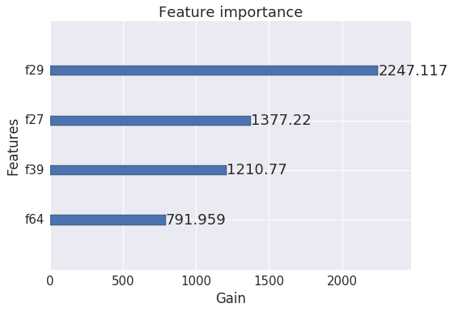
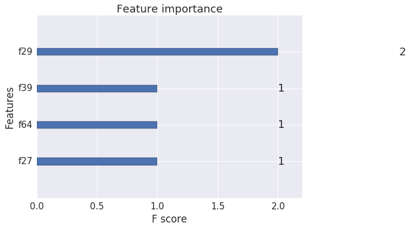
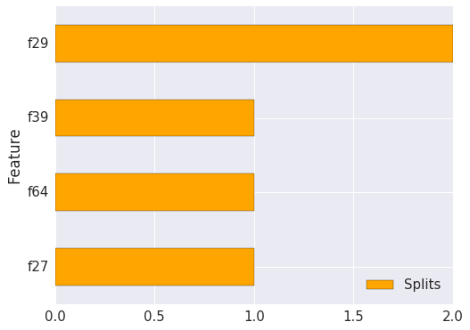

Spotting Most Important Features
The following notebook presents how to distinguish the relative importance of features in the dataset.
Using this knowledge will help you to figure out what is driving the splits most for the trees and where we may be able to make some improvements in feature engineering if possible.
What we’ll be doing:
- loading libraries and data,
- training a model,
- knowing how a tree is represented,
- plotting feature importance
Load libraries
The purpose of this step is to train simple model.
Let’s begin with loading all libraries in one place.
1 | %matplotlib inline |
/opt/conda/lib/python3.5/site-packages/IPython/html.py:14: ShimWarning: The `IPython.html` package has been deprecated. You should import from `notebook` instead. `IPython.html.widgets` has moved to `ipywidgets`.
"`IPython.html.widgets` has moved to `ipywidgets`.", ShimWarning)
Load data
Load agaricus dataset from file
1 | dtrain = xgb.DMatrix('../data/agaricus.txt.train') |
Train the model
Specify training parameters - we are going to use 5 stump decision trees with average learning rate.
1 | # specify training parameters |
Train the model. In the same time specify watchlist to observe it’s performance on the test set.
1 | # see how does it perform |
[0] test-error:0.11049 train-error:0.113926
[1] test-error:0.11049 train-error:0.113926
[2] test-error:0.03352 train-error:0.030401
[3] test-error:0.027312 train-error:0.021495
[4] test-error:0.031037 train-error:0.025487
Representation of a tree
Before moving on it’s good to understand the intuition about how trees are grown.
While building a tree is divided recursively several times (in this example only once) - this operation is called split. To perform a split the algorithm must figure out which is the best (one) feature to use.
After that, at the bottom of the we get groups of observations packed in the leaves.
In the final model, these leafs are supposed to be as pure as possible for each tree, meaning in our case that each leaf should be made of one label class.
Not all splits are equally important. Basically the first split of a tree will have more impact on the purity that, for instance, the deepest split. Intuitively, we understand that the first split makes most of the work, and the following splits focus on smaller parts of the dataset which have been missclassified by the first tree.
In the same way, in Boosting we try to optimize the missclassification at each round (it is called the loss). So the first tree will do the big work and the following trees will focus on the remaining, on the parts not correctly learned by the previous trees.
The improvement brought by each split can be measured, it is the gain.
~ Quoted from the Kaggle Tianqi Chen’s Kaggle notebook.
Let’s investigate how trees look like on our case:
1 | trees_dump = bst.get_dump(fmap='../data/featmap.txt', with_stats=True) |
0:[odor=pungent] yes=2,no=1,gain=4000.53,cover=1628.25
1:leaf=0.647758,cover=924.5
2:leaf=-0.93331,cover=703.75
0:[odor=musty] yes=2,no=1,gain=1377.22,cover=1404.2
1:leaf=-0.339609,cover=1008.21
2:leaf=0.75969,cover=395.989
0:[gill-size=narrow] yes=2,no=1,gain=1210.77,cover=1232.64
1:leaf=0.673358,cover=430.293
2:leaf=-0.365203,cover=802.35
0:[stalk-surface-above-ring=smooth] yes=2,no=1,gain=791.959,cover=1111.84
1:leaf=-0.277529,cover=765.906
2:leaf=0.632881,cover=345.937
0:[odor=pungent] yes=2,no=1,gain=493.704,cover=981.683
1:leaf=0.275961,cover=638.373
2:leaf=-0.46668,cover=343.31
For each split we are getting the following details:
- which feature was used to make split,
- possible choices to make (branches)
- gain which is the actual improvement in accuracy brough by that feature. The idea is that before adding a new split on a feature X to the branch there was some wrongly classified elements, after adding the split on this feature, there are two new branches, and each of these branch is more accurate (one branch saying if your observation is on this branch then it should be classified as 1, and the other branch saying the exact opposite),
- cover measuring the relative quantity of observations concerned by that feature
Plotting
Hopefully there are better ways to figure out which features really matter. We can use built-in function plot_importance that will create a plot presenting most important features due to some criterias. We will analyze the impact of each feature for all splits and all trees and visualize results.
See which feature provided the most gain:
1 | xgb.plot_importance(bst, importance_type='gain', xlabel='Gain') |

We can simplify it a little bit by introducing a F-score metric.
F-score - sums up how many times a split was performed on each feature.
1 | xgb.plot_importance(bst) |

In case you want to visualize it another way, a created model enables convinient way of accessing the F-score.
1 | importances = bst.get_fscore() |
{'f27': 1, 'f29': 2, 'f39': 1, 'f64': 1}
Now you can manipulate data in your own way
1 | # create df |
